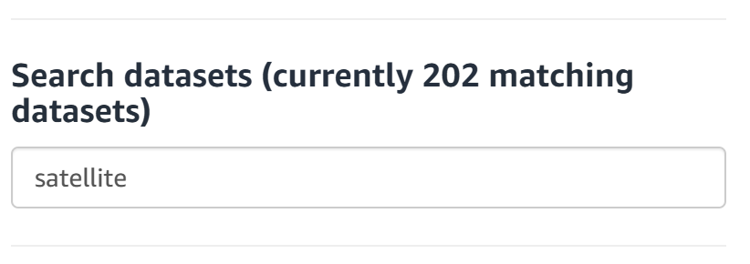
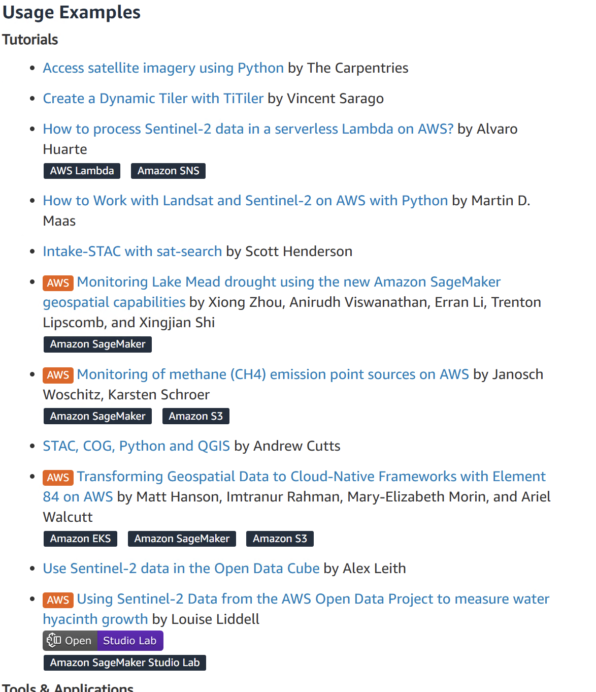

AWS Open Data Registry
The Open Data Registry on AWS is an excellent resource for geospatial data. It contains a plethora of vector and raster data.
- Go to
https://registry.opendata.aws/ - In the search data sets use keywords like satelite, africa, canopy height model.

For example, on the sentinel-2-lsa-cogs, below the description take a look at the Usage Examples.

Also, notice how the Resources on AWS have code snippets and links to help you in exploration of data.